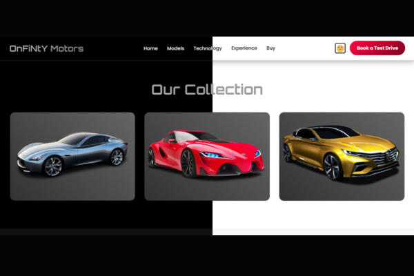

OnFiNtY Motors Landing Page
A premium, feature-rich landing page for a futuristic electric car brand, complete with a dark/light theme, dynamic animations, and a focus on luxury.
Project Overview
Luxury High-Tech UI
A sleek, premium design that blends a sophisticated aesthetic with metallic gradients and a striking accent color. The 'Orbitron' font adds a futuristic touch.
Interactive & Feature-Rich
Goes beyond a simple page with a dark/light theme switcher, a dynamic typewriter hero animation, and an interactive video player.
Impeccably Responsive
A flawless user experience on all devices, from large desktops to mobile phones, with a fluid grid system and an intuitive mobile navigation overlay.
Key Features

"Customizable Dark & Light Themes"
Users can switch between a sleek dark mode and a clean light mode. The chosen theme is saved in their browser for future visits.
.png)
"Engaging Typewriter Text Effect"
The main headline doesn't just appear—it's typed out character by character when the page loads, immediately grabbing the visitor's attention.
.png)
"Elegant Product Card Reveals"
Hovering over a car model reveals an elegant overlay with key stats and a discovery button, adding a touch of class to the browsing experience.
.png)
"Clean Custom Video Player"
The showcase video section features a custom play button that fades out to reveal the native video controls for a clean, user-friendly experience.
Technical Implementation
Theme Switching with `localStorage`
JavaScript handles theme toggling and saves the user's choice to `localStorage` for a persistent experience across sessions.
JavaScript Typewriter Effect
A custom JS function creates a typewriter effect on the hero title, making the initial page load feel more dynamic and engaging.
CSS `clamp()` for Fluid Typography
Headlines use the CSS `clamp()` function, allowing their font size to scale smoothly with the screen width for perfect readability.
Performant Animations (Observer API)
The Intersection Observer API efficiently triggers fade-in animations on scroll, ensuring a smooth visual experience without slowing down the browser.
CSS Grid for Responsive Layouts
The site's structure is built on modern, flexible CSS Grid layouts that adapt automatically to different screen sizes.
Parallax Scroll Effect
A subtle parallax effect is applied to the hero background using JavaScript, creating a simple but effective sense of depth.
Design & Development Details
Color Scheme: A versatile dual-theme palette. Dark theme uses blacks/grays with a fiery red/pink accent. Light theme uses whites/light grays.
Layout: A multi-section, responsive layout built with modern CSS Grid and Flexbox.
Animations: A comprehensive suite including a JS typewriter effect, parallax scrolling, Intersection Observer fade-ins, and CSS hover transitions.
Skills Demonstrated: Advanced JS (localStorage, DOM manipulation), Modern CSS (Variables, Grid, Clamp), UI/UX Design, Responsive Development.
Time taken to build: A premium project with this many features would take approximately 25-35 hours.
Pricing: For a custom-developed page with this level of polish and functionality, my personal pricing would be in the $500 - $850 range.